Urban Power Grid
How a kilowatt-hour travels from a power plant to an outlet at home.
Clickable nodes & animated electricity flow
Explore the system EVERYDAY LIFE. EXTRAORDINARY SYSTEMS.
There’s a whole world behind your everyday.
Use immersive interactions to understand the urban systems we rely on every day but rarely see. From electricity and water to waste, logistics, and metro operations — follow the connections.

Powering every possibilityLook closer.
Everything is connected.
Understand the big picture in 30 seconds.
Discover something new in three minutes.
ONE CITY / MANY CONNECTIONS
早高峰、暴雨、节假日：把九个系统放回同一座城市，看见它们如何相互影响。
01 / FIND YOUR PERSPECTIVE
Start with what makes you curious.
The networks hidden underground, behind walls, and far away keep everyday life running.
5 topics 02Every kilowatt-hour, drop of water, and breath of air is part of a much larger coordinated system.
4 topics 03Packages, elevators, and entire buildings operate through systems more complex than they appear.
4 topics 04Emergency response, traffic operations, and public services keep a city moving through change.
2 topics02 / GO BENEATH THE SURFACE
Choose a familiar part of daily life and rediscover the city through the invisible systems behind it.
How a kilowatt-hour travels from a power plant to an outlet at home.
Follow a drop from its source to your faucet, through wastewater treatment and back to nature or reuse.
Waste doesn’t disappear when you discard it. Its next urban journey begins.
Across sorting centers and city streets: how a package finds its way to you.
Behind every arrival: keeping a metro line moving through the rush and the quiet.
Electricity, water, elevators, and more. One building, many systems working as one.
Change signal timing. See why a shorter queue here can mean a longer wait elsewhere.
Sent, accepted, delivered, read: four different moments behind one small message.
Follow rainfall into infiltration, storage, discharge and surface water. Every drop must go somewhere.
Nine interactive topics, plus one connected-city experience. Category counts overlap. Demo figures are educational simulations, not live operational data.
03 / A DIFFERENT WAY TO UNDERSTAND
Follow the journey. See the whole system, from the first step to your front door.
Make a connection. Explore key nodes and discover why each one matters.
Change your perspective. Try different scenarios. See everyday life in a new light.
Every ordinary moment.
An extraordinary system behind it.